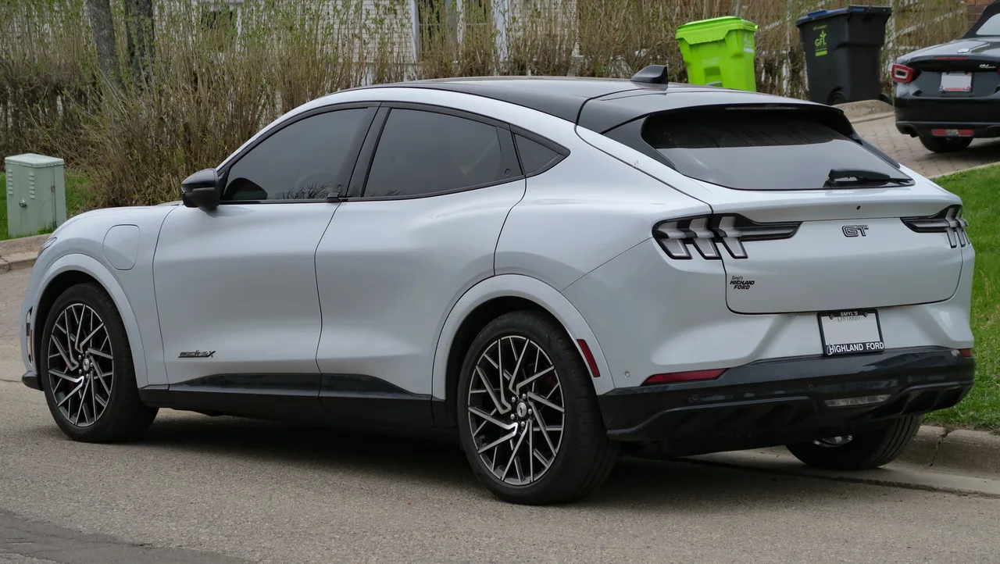

▲ 현행 2도어 포드 머스탱. 이 상징적인 쿠페 라인업에 4도어 세단이 합류할 준비를 하고 있다
포드가 2026년 8월 라스베이거스에서 열린 딜러 미팅에서 4도어 머스탱 세단 프로토타입을 비공개로 공개했습니다. 카메라 촬영이 엄격히 금지된 이 행사에는 짐 팔리 CEO가 직접 참석했으며, 참석한 딜러들의 전언에 따르면 공개된 차량은 "포르쉐 파나메라를 닮았다"는 인상을 남겼습니다. 출시 시점은 2028년경으로 예상되며, 시작 가격은 4만 달러 미만이 될 것으로 알려졌습니다.
1. 카메라 금지 행사, 그리고 남은 목격담
이번 공개는 철저히 통제된 환경에서 이뤄졌습니다. 포드는 딜러들에게 사진 촬영을 금지했고, 공식 이미지 역시 배포하지 않았습니다. 그럼에도 현장에 있던 딜러들의 증언은 구체적입니다. "머스탱의 얼굴을 하고 있지만 지붕선은 완전히 다른 세단"이라는 설명과 함께, 뒷좌석 공간이 포르쉐 파나메라보다 넉넉하다는 평가가 나왔습니다. 짐 팔리 CEO가 이 자리에 직접 참석했다는 점은 포드 경영진이 이 프로젝트에 걸고 있는 무게감을 짐작하게 합니다.
▲ 포르쉐 파나메라. 딜러들은 공개된 4도어 머스탱의 실루엣이 파나메라와 닮았다고 평가했다
2. 왜 세단인가 — 2도어 머스탱의 위기
포드가 4도어 머스탱을 추진하는 배경에는 뚜렷한 시장 신호가 있습니다. 전통적인 2도어 머스탱 쿠페의 판매량은 최근 몇 년 새 큰 폭으로 감소했습니다. 소비자들이 SUV와 크로스오버로 이동하면서, 스포츠카 특유의 좁은 실내와 부족한 실용성을 감수하려는 수요 자체가 줄어든 탓입니다. 반면 경쟁사인 스텔란티스의 닷지 차저 데이토나는 4도어 버전이 2도어 버전보다 꾸준히 더 많이 팔리며, "머슬카도 4도어면 팔린다"는 사실을 입증했습니다. 포드로서는 머스탱이라는 상징적 배지를 지키면서도 판매량을 확보할 현실적 해법이 필요했던 셈입니다.
| 항목 | 4도어 머스탱(예상) | 현행 2도어 머스탱 |
|---|---|---|
| 출시 시점 | 2028년경 | 판매 중 |
| 시작 가격 | 4만 달러 미만 | 약 3.5만 달러 |
| 뒷좌석 공간 | 파나메라 이상 | 사실상 없음(2+2) |
| 도어 수 | 4도어 | 2도어 |

▲ 닷지 차저 데이토나 4도어. 경쟁사의 4도어 머슬카가 2도어보다 잘 팔리는 현상이 포드의 결정에 영향을 준 것으로 보인다
3. 이름과 파워트레인 — '마하 4'의 정체는
공식 확인은 아니지만, 포드는 2025년 2월 '마하 4(Mach 4)'라는 상표를 출원한 바 있어 이 이름이 유력하게 거론됩니다. 파워트레인에 대한 구체적 정보는 아직 나오지 않았지만, 업계에서는 머스탱의 상징인 V8 엔진을 완전히 배제하기보다 가솔린과 전동화 옵션을 병행할 가능성에 무게를 두고 있습니다. 포드가 이미 순수전기 SUV인 머스탱 마하-E를 통해 '머스탱' 배지를 세단·크로스오버 영역까지 확장해온 전례가 있다는 점도 이런 추측에 힘을 싣습니다.

▲ 포드 머스탱 마하-E. 포드는 이미 이 순수전기 크로스오버를 통해 '머스탱'이라는 이름을 쿠페 밖으로 확장한 경험이 있다
4. 세단을 버렸던 포드가 돌아오는 이유
포드는 2018년, 크로스오버·SUV·트럭에 집중하겠다며 북미 시장에서 세단 라인업을 사실상 정리하겠다고 선언한 바 있습니다. 그 여파로 토러스는 2019년형을, 퓨전은 2020년형을 끝으로 북미 생산이 종료됐고, 머스탱만이 유일한 승용차 라인업으로 남았습니다. 그로부터 약 10년 만에 다시 세단 형태의 신차를 검토한다는 것은, SUV 일변도 전략만으로는 채우기 힘든 수요층이 여전히 존재한다는 판단이 깔려 있는 것으로 풀이됩니다.
5. 정리 — 아직은 소문, 그러나 무게감 있는 소문
아직 이 4도어 머스탱은 공식 발표되지 않은 프로토타입 단계입니다. 그러나 CEO가 직접 참석한 비공개 딜러 공개 행사, 구체적인 가격대와 출시 시점 추정치가 함께 흘러나왔다는 점은 이 프로젝트가 상당히 구체화된 단계에 와 있음을 시사합니다. 2도어 머스탱이 시장에서 겪고 있는 어려움을 고려하면, 4도어 세단은 머스탱이라는 브랜드를 다음 세대까지 이어가기 위한 포드의 승부수가 될 가능성이 큽니다. 공식 발표가 나오는 대로 상세 스펙을 다시 전해드리겠습니다.